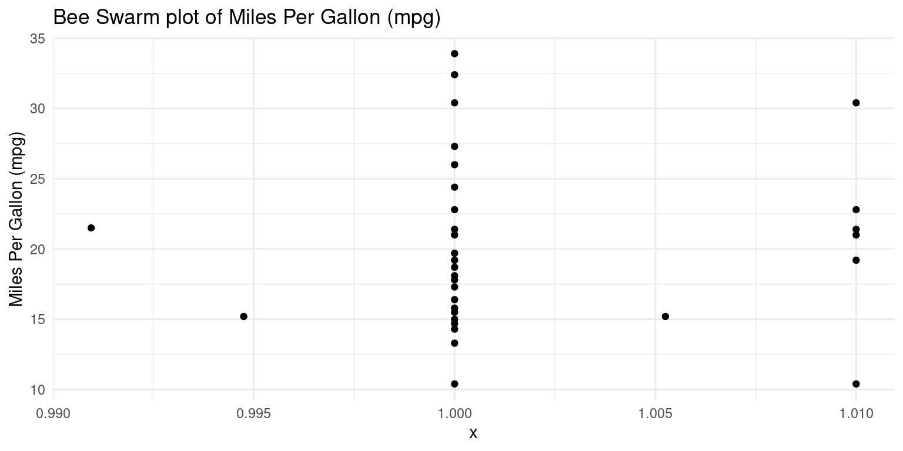
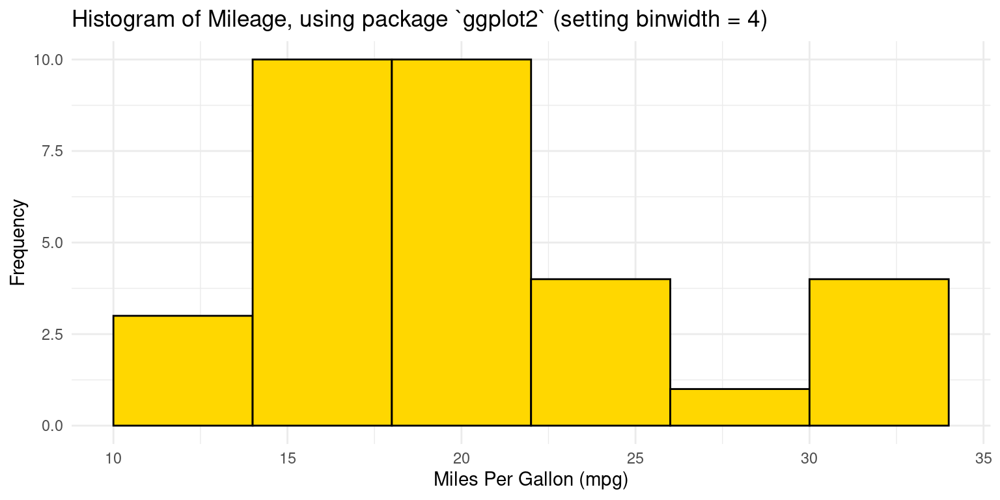
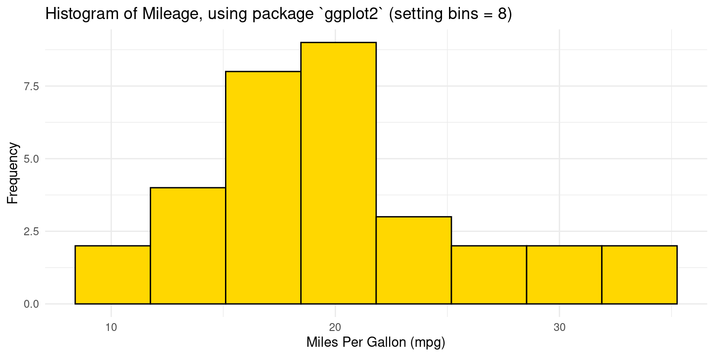
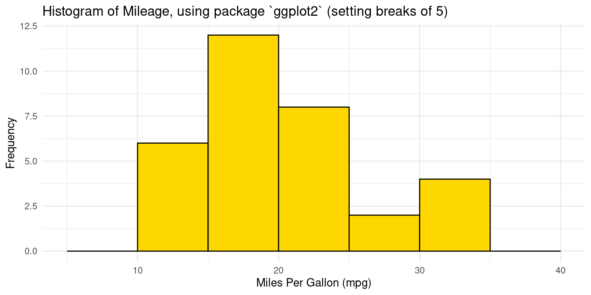
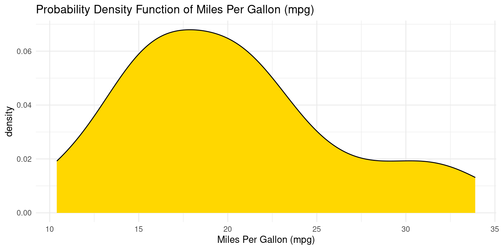
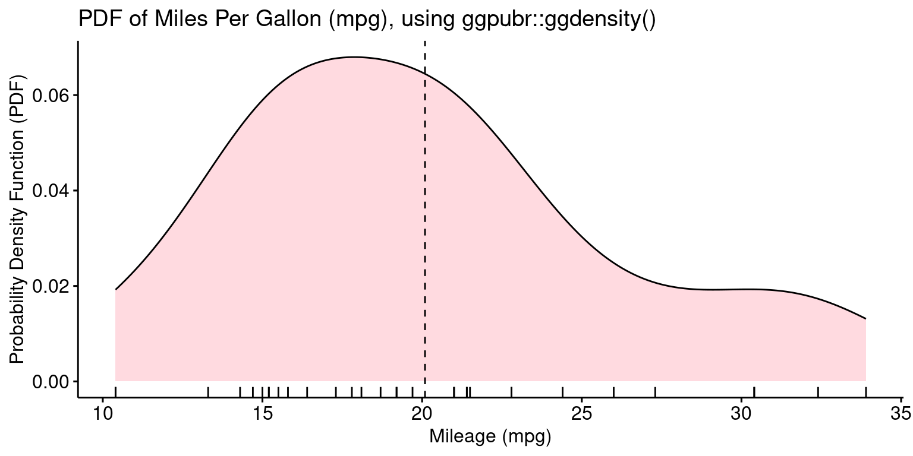
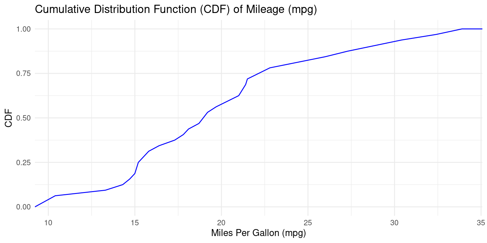
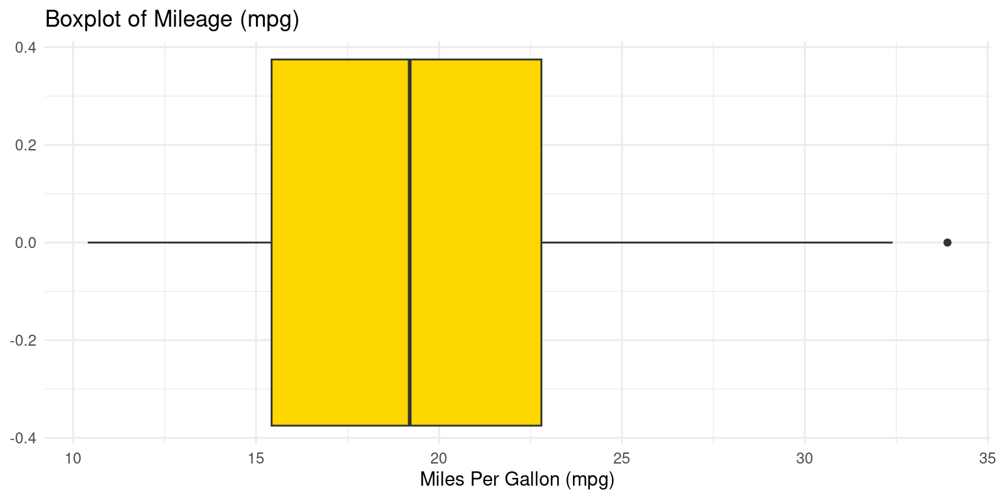

# Load the required libraries, suppressing annoying startup messages
library(tibble)
suppressPackageStartupMessages(library(dplyr))
# Read the mtcars dataset into a tibble called tb
data(mtcars)
tb <- as_tibble(mtcars)
attach(tb)
# Convert several numeric columns into factor variables
tb$cyl <- as.factor(tb$cyl)
tb$vs <- as.factor(tb$vs)
tb$am <- as.factor(tb$am)
tb$gear <- as.factor(tb$gear)Continuous Data (2 of 4)
Aug 1, 2023
Using ggplot2 for Visualizing Univariate Continuous Data
In R, we can create these plots for Visualizing Univariate Continuous Data using the
ggplot2package. For instance, the functiongeom_boxplot()produces box plots,geom_violin()creates violin plots, andgeom_histogram()andgeom_density()generate histograms and density plots, respectively. Theggbeeswarmpackage can be used for creating bee swarm plots with thegeom_beeswarm()function. We will go into more detail about how to use these functions and interpret these plots in the upcoming sections.Data: Let us work with the same mtcars data from the previous chapter. Suppose we have run the following code:
Let’s load the ggplot2, dplyr libraries. These packages provide tools for creating stunning graphics and managing our data respectively. The package ggthemes allows us to use a variety of themes.
library(dplyr)
library(ggthemes)
library(ggplot2)
Attaching package: 'ggplot2'The following object is masked from 'tb':
mpgHistogram using ggplot
- The following code creates a histogram using the ggplot package:
ggplot(tb,
aes(x = mpg)) +
geom_histogram() +
theme_minimal() +
labs(title = "Histogram of Miles Per Gallon (mpg)", x = "Miles Per Gallon (mpg)", y = "Frequency")`stat_bin()` using `bins = 30`. Pick better value with `binwidth`.
- We can personalize the appearance of the histogram, as follows:
ggplot(tb,
aes(x = mpg)) +
geom_histogram(binwidth = 1,
fill = "lightblue",
color = "black") +
theme_minimal() +
labs(title = "Histogram of Miles Per Gallon (mpg)", x = "Miles Per Gallon (mpg)", y = "Frequency")
- Here is how the code works:
First, we specify our data set and the aesthetic mappings with the ggplot() function. The x aesthetic, which stands for the variable that we’re binning (the mpg variable), is the only requirement for a histogram.
Next, we use the geom_histogram() function to draw the histogram. The binwidth argument specifies the width of the bins in the histogram, and we have chosen 2 as an arbitrary width. The fill color of the bars is set to steel blue, and the border color is black.
We then apply a minimalist theme to our plot with theme_minimal(), giving it a clean and polished look.
Lastly, the labs() function allows us to add a title to our plot and labels for our x and y axes. We have named our plot “Histogram of mpg” and labeled our axes as “Miles Per Gallon (mpg)” and “Frequency”. [1]
- In order to create a histogram with 12 bins of equal width, we need to use the bins argument within the geom_histogram() function instead of binwidth
ggplot(tb,
aes(x = mpg)) +
geom_histogram(bins = 12,
fill = "green",
color = "black") +
theme_minimal() +
labs(title = "Histogram of mpg", x = "Miles Per Gallon (mpg)", y = "Frequency")
- By replacing binwidth = 2 with bins = 12, we instruct R to create 12 bins of equal width. The bins argument decides the number of bins in the histogram, and the width of the bins is calculated by dividing the range of the data by the number of bins. Here, the range of the mpg variable is divided into 12 bins of equal width.
- To specify custom bin ranges in a histogram, we would typically use the breaks argument within the geom_histogram() function. We would need to supply a vector of breakpoints which defines the range of each bin. For example, if we wanted to define bins with ranges of 10-15, 15-20, 20-25, 25-30, and 30-35 for the mpg variable, we could write the code:
ggplot(tb,
aes(x = mpg)) +
geom_histogram(breaks = seq(5, 40, by = 5),
fill = "yellow",
color = "black") +
theme_minimal() +
labs(title = "Histogram of mpg", x = "Miles Per Gallon (mpg)", y = "Frequency")
- In this code, the seq() function is used to generate a sequence of numbers from 10 to 35, with an increment (by) of 5. These numbers serve as the breakpoints for the bins in the histogram. The breaks argument then uses these numbers to set the bin ranges. The plot aesthetics remain the same as before.
Probability Density Function (PDF) plot using ggplot
- This type of plot shows the distribution of a single variable, and the area under the curve represents the probability of an observation falling within a particular range of values.
ggplot(tb, aes(x = mpg)) +
geom_density(fill = "lightpink",
alpha = 0.5) +
theme_minimal() +
labs(title = "Probability Density Function of Miles Per Gallon (mpg)", x = "Miles Per Gallon (mpg)", y = "Density")
We first designate our data source and the aesthetic mappings using the ggplot() function. The aesthetic mapping for x is the variable we’re plotting, which is mpg.
Subsequently, we append a density plot to our plot by using the geom_density() function. We’ve filled the area under the curve with a light pink color by setting fill to “lightpink” and alpha to 0.5.
Cumulative Distribution Function (CDF) Plot using ggplot
- We can generate a CDF plot. First, we’ll calculate the cumulative distribution. This can be achieved by arranging the data in ascending order, then adding a column representing the proportion of values less than or equal to each value:
tb <- tb %>%
arrange(mpg) %>%
mutate(cdf = row_number() / n())- The arrange() function sorts the data, mutate() creates a new column, and row_number() gives the rank of each row, while n() provides the total number of rows. The quotient of these represents the proportion of values less than or equal to each value. Finally, we create the plot:
ggplot(tb, aes(x = mpg, y = cdf)) +
geom_line() +
labs(x = "Miles Per Gallon (mpg)", y = "CDF", title = "Cumulative Distribution Function (CDF) of mpg")
Boxplot using ggplot
ggplot(tb,
aes(y = mpg)) +
geom_boxplot() +
theme_minimal() +
labs(title = "Boxplot of Miles Per Gallon (mpg)", y = "Miles Per Gallon (mpg)")
We’re first specifying the source of our data and the aesthetic mappings, which define how variables in the data are mapped to visual properties. In this case, we’re only specifying the y aesthetic, since a boxplot of a single variable doesn’t need an x aesthetic. The y aesthetic is mapped to the mpg variable.
Then, we’re adding a boxplot to the plot. The geom_boxplot() function does this.
After this, theme_minimal() is used to apply a minimalistic theme to the plot, which has a clean and professional appearance.
Finally, we’re adding some labels to the plot with the labs() function.
Bee Swarm plot using ggplot
The bee swarm plot is an alternative to the box plot, where each point is plotted in a manner that avoids overlap.
We need to install and load the ggbeeswarm package. Now we create a bee swarm plot using ggplot2 and ggbeeswarm for the mpg column of the tb tibble.
library(ggbeeswarm)
ggplot(tb, aes(x = 1, y = mpg)) +
geom_beeswarm() +
theme_economist() +
labs(title = "Bee Swarm plot of mpg", y = "Miles Per Gallon (mpg)")
Initially, we declare our dataset and the aesthetic mappings, defining how variables in the data are visually represented. For the bee swarm plot, we only need a y aesthetic, which is the mpg variable. We set the x aesthetic to 1 as a placeholder, because bee swarm plots require an x aesthetic, but we only have one variable.
Following that, we append a bee swarm plot using the geom_beeswarm() function.
We then adopt a minimalist theme by using theme_minimal() to give our plot a sleek and simple look.
To finish, we use the labs() function to label the plot.
Violin plot using ggplot
- We will now generate a violin plot using the ggplot2 package in R for the mpg column
ggplot(tb,
aes(x = "", y = mpg)) +
geom_violin() +
labs(x = "", y = "Miles Per Gallon (mpg)", title = "Violin Plot of mpg")
In this script, aes() defines aesthetic mappings, mapping mpg to the y-axis. geom_violin() generates the violin plot, and labs() adds a title for the plot and labels the y-axis
We can add a boxplot to the violin plot, as follows:
ggplot(tb, aes(x = "", y = mpg)) +
geom_violin() +
geom_boxplot(width = 0.1) +
labs(x = "", y = "Miles Per Gallon (mpg)", title = "Violin Plot with Boxplot of mpg")
Quantile-Quantile (Q-Q) Plots using ggplot
- In order to create a Q-Q plot, we will use the ggplot() function to specify our dataset and aesthetic mappings (aes()). Then, we’ll use stat_qq() to generate the Q-Q plot and stat_qq_line() to add the reference line:
ggplot(tb,
aes(sample = mpg)) +
stat_qq() +
stat_qq_line() +
labs(x = "Theoretical Quantiles", y = "Sample Quantiles", title = "Q-Q Plot of mpg")
- In this ggplot() command, aes() defines the aesthetic mappings, mapping mpg to the sample data. stat_qq() generates the Q-Q plot, stat_qq_line() adds the reference line, and labs() allows us to add a title for the plot and labels for the axes.
References
[1]
Wickham, H. (2016). ggplot2: Elegant Graphics for Data Analysis. Springer-Verlag New York.
Henderson, D. R. (1974). Motor Trend Car Road Tests. Motor Trend, 1974. Data retrieved from R mtcars dataset.
[2]
Wickham, H. (2016). ggplot2: Elegant Graphics for Data Analysis. Springer-Verlag New York.
Eklund, A. (2020). ggbeeswarm: Categorical Scatter (Violin Point) Plots. R package version 0.6.0. https://CRAN.R-project.org/package=ggbeeswarm
Henderson, D. R. (1974). Motor Trend Car Road Tests. Motor Trend, 1974. Data retrieved from R mtcars dataset.
Hassell, N. (2001). Rug plots. Significance, 44(4), 181-182.